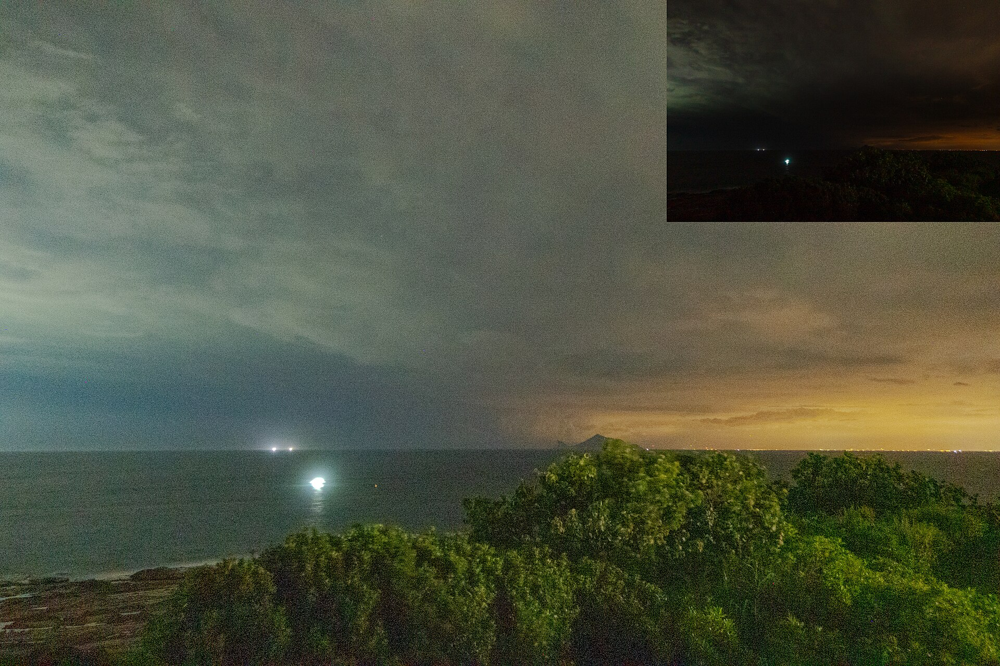

第 14 章
不夜城的时钟
市路灯管理处档案室的铁皮柜子里，存着一份编号为“城建发〔2013〕127号”的征求意见稿。文件正式标题是《城市户外照明节能与光污染控制管理办法（修订草案）》，印发日期2013年11月。它在行政序列里流转了大约十个月，经过两轮专家论证和一次公开征求意见后，于次年九月以正式规章颁布。从草案到定稿，正文修改主要集中在节能指标和灯具技术参数上——LED替换高压钠灯的时间表被提前了，商业区照度上限做了微调。但附录中有一行数字，从草案到定稿始终未变：“居住区夜间环境照度上限：15勒克斯。”
这个数值的制定依据，在论证报告附件中有清楚说明。它综合了两方面考量：一是行人夜间活动的基本安全需求——在15勒克斯照度下，正常视力成年人可以辨认路面障碍物、判断他人面部表情和行进方

向；二是“光侵扰”的人体感知阈值——当住宅窗户外部的垂直照度超过15勒克斯时，居民投诉夜间休息受干扰的概率显著上升。该标准参照了国际照明委员会的相关建议值，结合中国城市居住区的建筑密度和户型特征做了本地化调整。从技术角度讲，它是一份严谨的、有据可查的参数。
问题不在参数本身。问题在于，整份文件——从草案到定稿，从正文到附录，从论证报告到实施细则——从头至尾没有出现“鸟类”这个词。“生态敏感区”作为术语在草案阶段出现过两次，均出现在特殊区域照明管控条款中。但这两条在论证阶段被标注为“执行标准尚待细化”，定稿中被合并为一条原则性表述：“对自然保护区、森林公园等生态敏感区域周边的户外照明设施，可参照本办法相关标准执行更严格的管控要求。”没有具体照度上限，没有监测指标，没有问责机制。“可参照”这三个字在法律语言里的分量，任何一个读过行政规章的人都清楚。
这不是一份失职的文件。它的起草者完成了自己被要求完成的工作：在人类视觉舒适、能源效率和公共安全之间寻找可操作的平衡点。它没有涉及鸟类，因为没有人要求它涉及鸟类。城市照明管理的行政逻辑从一开始就将光污染界定为三个问题——眩光（对人的视觉干扰）、光侵扰（对人的生活干扰）和天空辉光（对天文观测的干扰）。这三个问题共享一个前提：受影响的主体是人。鸟类的视网膜，连同它那套对紫外光敏感的四色视觉系统，从一开始就不在这个框架的考量范围内。
而鸟类的视网膜，在解剖学和生理学层面，与人类的视网膜存在根本性差异。大多数昼行性鸟类拥有四种视锥细胞。人类三种视锥细胞分别对红、绿、蓝三个波段敏感，混合构成所谓“可见光谱”。鸟类多出来的那一种视锥细胞对紫外光——波长大约300到400纳米——敏感。这意味着鸟类看到的颜色不仅是人类可见颜色的扩展版，而是一个完全不同的色彩空间。在这个空间里，某些对人类而言看起来一模一样的白色物体——比如两片花瓣或两只同种鸟类的羽毛——可能呈现出截然不同的紫外反射图案。这些图案在鸟类的种内识别、配偶选择和觅食行为中扮演关键角色。
这个差异直接关联到城市照明问题。高压钠灯的光谱集中在黄橙波段，紫外成分很低。传统上认为钠灯对鸟类和昆虫的吸引相对较弱，这个判断大体成立。
但LED光源的光谱特性完全不同。典型的白光LED通过在蓝光芯片上涂覆荧光粉产生白光，其光谱在450到480纳米的蓝光波段有一个尖锐峰值。这个峰值恰好落在鸟类视觉系统最敏感的光谱区间之一——许多鸟类的四种视锥细胞中，有一种对短波长蓝光具有极高灵敏度。这意味着，对人类而言只是“偏冷色调”的LED白光，在鸟类视觉系统中可能呈现为远比钠灯更强烈、更刺眼的刺激。
当一座城市将数万盏高压钠灯替换为LED路灯时，从人类角度看是能效提升和色温改善；从鸟类角度看，夜空的光谱构成发生了质变——蓝光成分急剧增加，而蓝光恰恰是对生物钟系统干扰最强的波段。
要理解为什么蓝光的干扰最强，需要进入光周期调控的生理机制。鸟类的繁殖行为不是由日历触发的。在温带地区，季节更替意味着日照长度的规律性变化——冬至前后白昼最短，夏至前后白昼最长。这个变化幅度在中高纬度地区可达数小时之多，且年复一年极其稳定。相比之下，温度、降雨、食物丰度这些环境信号都存在较大年际波动。演化因此将日照长度选为繁殖周期的首要校准器：它是所有环境信号中最可靠的那一个。
光信号的接收和处理路径已经研究得相当清楚。光线穿过鸟类眼睛，刺激视网膜上的光感受器，信号经视神经传入脑部，到达下丘脑的视交叉上核——这是生物钟的主控中枢。视交叉上核通过一系列神经连接控制松果体的活动。松果体是位于脑部中央的内分泌腺体，其核心功能之一是合成和分泌褪黑激素。褪黑激素的分泌模式极其规律：白天几乎检测不到，入夜后开始上升，午夜前后达到峰值，黎明前逐渐回落。这个节律由视交叉上核的生物钟直接驱动，而生物钟本身又通过视网膜接收到的明暗信号与外界环境的昼夜周期保持同步。
褪黑激素因此被称为“黑暗激素”——它的存在告诉身体的每一个细胞：现在是夜晚。这个信号的功能远不止于调节睡眠。在鸟类繁殖调控中，褪黑激素扮演关键角色。冬季长夜维持着高水平的褪黑激素分泌，持续抑制下丘脑促性腺激素释放激素的分泌，进而抑制垂体促性腺激素的释放，最终抑制性腺发育和性激素合成。整个繁殖轴被压制在低活动状态。春季到来，日照延长，夜间褪黑激素分泌峰的持续时间缩短，抑制作用逐步解除，繁殖轴被激活——性腺开始发育，雄性睾酮水平上升，鸣唱行为启动，领域建立，求偶和筑巢随之展开。
这套机制的关键特性在于：它不依赖于光照的绝对强度，而依赖于光照的时序模式。冬季里一个晴朗的白天可能比春季阴天正午更亮，但鸟类的光周期系统不会被这种单日亮度波动欺骗，因为它监测的是昼夜长度的相对比例变化——这个变化是缓慢的、累积的、方向明确的。
人工夜间照明恰恰在这一点上制造了混淆。光照强度不需要很高就能产生效果。多项控制实验显示，强度低至1到5勒克斯的人工夜间照明——大致相当于城市天空辉光在郊区的典型水平，远低于路灯直射区域照度——就足以显著抑制部分鸟类的夜间褪黑激素分泌。抑制程度与光照强度呈剂量依赖关系：照度越高，褪黑激素分泌峰被压得越低。更重要的是，抑制效应与光谱成分密切相关：在同等照度下，短波长蓝光对褪黑激素的抑制效果比长波长红光高出数倍。这是因为鸟类视网膜中负责向视交叉上核传递明暗信号的那一类光感受器——称为内在光敏视网膜神经节细胞——其感光色素对蓝光波段具有最高敏感性。
这解释了为什么LED光源的普及对鸟类构成了一种新的、更强的生理挑战。高压钠灯的橙黄光对褪黑激素系统的干扰相对温和；LED的蓝白光则精准地打在了这套系统最脆弱的环节上。城市照明的节能改造在减少碳排放的同时，无意中增强了对鸟类生物钟的干扰强度——一个在行政文件中从未被计算过的代价。
这种干扰的后果已经在城市鸟类种群中被记录到。在欧洲多个城市进行的对比研究显示，栖息在夜间人工光照强度较高区域的雄性乌鸫，其春季睾丸发育时间比郊区森林中的同类平均提前了十到十九天。血液样本分析进一步证实，城市乌鸫夜间的褪黑激素分泌峰值显著低于郊区种群——不是轻微降低，而是被压低了百分之三十到五十。这意味着它们的整个生理系统在夜间接收到的“黑暗信号”被大幅削弱。
行为层面的变化与此一致。城市乌鸫在冬季就开始鸣唱的现象，在欧洲和中国东部多个城市均有记录。正常年周期中，雄性乌鸫的领域鸣唱通常在二月末或三月初启动，此时日照长度已超过约十一小时。但在夜间照明强度较高的城市区域，部分雄性乌鸫在十二月底或一月初便开始鸣唱——此时自然日照长度尚不足十小时，温度远低于繁殖季节正常范围。这些个体的光周期系统已被人工光照欺骗了足够长时间，繁殖轴提前解除了抑制。
白头鹎在中国东部城市中表现出类似趋势。这种鸟的正常繁殖期集中在四月到七月，但在上海、杭州、南京等城市的中心城区，繁殖启动时间出现显著提前。研究者记录到的提前筑巢案例出现在三月初甚至二月下旬——比郊区种群早了大约三到四周。提前孵出的雏鸟面对的是一个昆虫生物量仍然低下的早春环境。大多数鳞翅目幼虫——白头鹎育雏期最重要的蛋白质来源——的高峰期出现在四月下旬到五月上旬。三月上旬孵化的雏鸟在食物需求最高的生长阶段恰好错过了这个高峰。
后果直接反映在繁殖成功率上。一项针对杭州城市白头鹎繁殖生态的追踪记录显示，二月下旬至三月上旬启动的繁殖尝试中，平均每巢成功出飞的幼鸟数比四月启动的批次少大约一只。对于每次繁殖投入四到五枚卵的白头鹎而言，这个差距意味着繁殖成功率下降百分之二十以上。研究者同时注意到，部分提前繁殖的亲鸟在第一次繁殖失败后会尝试第二次繁殖——这是一种补偿机制。但补偿并不完全：第二次繁殖的雏鸟出飞时间推迟到六月甚至七月，面临更高的高温应激风险和捕食压力。
如果这种趋势仅限于少数个体，种群层面的影响可能是有限的。但城市光污染不是局部现象。光穹——城市上空由地面灯光散射形成的大范围天空辉光——的影响范围远超光源本身。在晴朗夜晚，大型城市的光穹可以延伸到市中心以外数十公里。这意味着栖息在城市边缘、郊区和城郊过渡带的大部分鸟类种群都在不同程度上暴露于人工夜间光照之中。那些没有被直接照射到的个体，仍然生活在被削弱的黑暗里。
对于留鸟而言，光周期干扰的后果主要表现为繁殖时机错位。对于迁徙鸟类而言，后果可能更为严重——因为它们在夜间飞行中直接遭遇城市光穹时，面临的不只是生理节律干扰，而是空间定向能力的丧失。
夜鹭和白鹭是东亚地区城市水域最常见的两种鹭科鸟类。它们共享许多生态特征：都以鱼类和水生无脊椎动物为主食，都在乔木或灌木上集群筑巢，都喜欢在城市公园的湖泊和河道边觅食。
但它们在活动节律上有一个关键差异：白鹭主要是昼行性觅食者，夜鹭则主要在夜间和晨昏时段活动。在广东新会的小鸟天堂，这种节律差异被观察得尤为清晰——白鹭朝出晚归，灰鹭（夜鹭）则暮出晨归。每天傍晚7时15分至7时45分（冬季提前一小时），灰鹭中经验丰富的领头鸟一呼百应，召集一众，成群结队，编队飞出，人称“百鸟归巢”，实为“百鸟出巢”，此时灰鹭才暮出觅食。第二天清晨5时15分至6时许，灰鹭经过一夜辛劳，满载而归，纷纷飞回，此谓之真正的“百鸟归巢”，每日周而复始，时间算得相当准确。
这个差异意味着夜鹭在更大程度上暴露于城市夜间照明的影响之下——不仅是作为栖息者暴露于天空辉光，而且是作为飞行者直接穿越城市的光环境。
夜鹭的夜间飞行依赖一套经过演化优化的导航系统。在自然条件下，它们利用星光和月光的偏振模式、地磁线索以及视觉地标进行空间定向。这套系统能够在极低照度下运作——候鸟在数千米高空的暗夜中飞越数百公里，依赖的正是对微弱光信号的精确解析能力。
城市光穹从两个层面干扰这个过程。第一层是吸引与偏离。夜鹭在飞行途中遇到城市光穹时，会表现出趋光行为——飞行方向朝光源偏转。这种行为在多种夜间迁徙鸟类中均有记录，其机制尚未被完全理解，但可能与昆虫的趋光性共享部分神经基础：夜间飞行中的鸟类可能将人工光源误认为月光或星光反射的水面——一种在自然条件下指示开阔空间的视觉线索。
无论机制如何，结果一致：候鸟群在接近大型城市光穹时，飞行方向和高度出现明显波动。雷达追踪数据记录了这种波动：原本以稳定速度和方向飞行的候鸟群，在进入城市光穹边缘时突然分散成多个子群，各自朝不同方向偏转，其中一部分直接飞向城市中心方向。
第二层是困陷。一旦进入城市内部，候鸟面对的是高度异质化的光环境。建筑物轮廓灯、广告屏幕、道路照明、景观射灯、工地探照灯各自发出不同强度、不同光谱的光线，在城市空间中形成复杂的光迷宫。在这种环境中，候鸟的空间定向能力进一步恶化。它们可能在光源之间反复往返飞行——这种行为在观鸟记录中被称为“光陷”——消耗大量能量储备而无法找到脱离路径。被强光束困住的个体可能围绕光源盘旋数小时之久，直到体力耗尽或黎明到来。
最严重的后果是撞击。被灯光吸引偏离航线的候鸟，在夜间飞行中面临一个它们无法感知的危险：玻璃幕墙。当建筑内部照明开启时，玻璃幕墙变成透明的陷阱——候鸟看到的不是固体障碍物，而是透过玻璃可见的室内空间或反射的天空影像。它们以正常飞行速度撞上去。撞击通常在瞬间致死：颅骨骨折、颈椎断裂、内脏破裂。即使没有当场死亡，坠落在地面上的受伤个体也面临极高的后续死亡率——夜间低温、流浪猫捕食、以及次日的车辆碾压都是致命的后续风险。
美国鱼类与野生动物管理局与美国史密森学会的联合评估给出了一个数量级估算：北美每年因撞击玻璃建筑而死亡的鸟类数量在3.65亿至9.88亿只之间。这个数字上下限差距很大，反映了监测数据的不足和推算方法的不确定性。但即使取最低值，每年三亿只以上的死亡量级也足以使玻璃撞击成为人类活动导致鸟类死亡的第三大因素——仅次于栖息地破坏和流浪猫捕食。在这三亿多只中，相当一部分是夜间迁徙途中被灯光吸引而撞击建筑的小型雀形目鸟类——莺类、鸫类、雀类——它们体型小、飞行速度快、夜间撞击后几乎不可能被发现和救助。
中国城市中类似的系统性监测数据仍然缺乏。但局部记录已揭示了问题的存在规模。北京、上海、广州、深圳、成都、武汉等城市的观鸟团体在每年春秋迁徙季节都会记录到玻璃撞击事件。上海一家观鸟组织在2016年至2019年间积累的一份不完全记录显示，春季迁徙季的四至五月和秋季迁徙季的九至十月是撞击事件高峰期；夜间照明强度较高的商务区建筑群周边是事件密度最高的区域；
涉及的物种包括夜鹭、池鹭、白鹭、普通鸬鹚、多种鸫类、柳莺类和鹟类。记录是不完全的——大多数撞击事件发生在夜间或凌晨，目击概率极低；受伤个体往往在被人发现前就被清除或捕食；许多建筑管理方没有报告撞击事件的机制和意愿。这份记录所反映的只是冰山露出水面的那一小部分。
这些事实指向一个悖论：人类用灯光驱散了对黑暗的恐惧，却为鸟类制造了一种比黑暗更危险的环境。在自然条件下，黑暗是保护性的。夜间的低光照水平限制了大多数视觉导向捕食者的活动能力，为栖息中的鸟类提供了一层掩护。候鸟选择在夜间迁徙——尤其是体型较小、容易成为猛禽猎物的雀形目鸟类——部分原因正是为了利用黑暗作为掩护降低被捕食风险。夜间大气通常更稳定，气温更低，有助于减少迁徙飞行中的能量消耗和水分流失。这套策略在数千万年的演化中被反复验证和优化：夜间迁徙是许多鸟类生命周期中最关键的适应性行为之一。
城市人工光照彻底改写了这套规则。黑暗不再可靠——它被切割成碎片，被压缩成建筑之间的缝隙，被天空辉光稀释成一种介于明暗之间的模糊状态。候鸟的迁徙通道被一道道光线拦截、扭曲、困陷。那些成功穿越城市光穹的个体，其体内时钟也可能因光照暴露而发生微妙漂移——迁徙出发的时间窗口、中途停歇的时长、抵达繁殖地的时间节点，所有这些由光周期精密调控的行为环节都可能受到干扰。
这种干扰的后果在种群层面缓慢累积。它不是以个体的直接死亡显现——不像玻璃撞击那样可以在清晨的建筑基座旁清点尸体——而是以更隐蔽的方式渗透进种群的年度动态：繁殖成功率下降几个百分点、迁徙能量预算失衡、年度存活率出现微小但持续的下滑、种群年龄结构发生变化。这些效应需要长时段、大样本的数据才能被检测到，而这类数据恰恰是目前最稀缺的。因此，它们在政策评估中近乎隐形。
回到那份照明管理办法。它的制定框架是清晰的、自洽的、在其自身逻辑内部合理的。“居住区夜间环境照度上限：15勒克斯”这个数值所依据的人体感知研究可以追溯到数十年的视觉科学积累：人眼在暗适应条件下对路面障碍物的辨识阈值是多少，住宅窗户外部的垂直照度达到什么水平会显著影响居民睡眠质量评估得分——这些问题都有实验数据和统计分析的支撑。
但如果从鸟类的生理需求出发重新审视这个标准，巨大的空白就浮现出来了。1到5勒克斯的天空辉光已足以干扰部分鸟类的褪黑激素分泌节律。15勒克斯——这是居住区地面的标准照度上限——指的是地面水平照度，而光源直射区域的实际照度远高于此。路灯灯杆下方地面照度通常在20到50勒克斯之间；商业区人行道设计照度标准往往设定在30到100勒克斯；建筑外立面景观照明可能产生数百勒克斯的表面亮度；LED广告屏幕峰值亮度则可能达到数千勒克斯。
这些数值对鸟类意味着什么？现有研究只能给出方向性答案：剂量越高，生理干扰越深；光谱越偏蓝，效应越强；暴露时间越长，节律漂移越难恢复。但精确的剂量-效应曲线、不同光谱组合的比较数据、长期种群影响的量化评估——这些信息要么刚刚开始积累，要么还完全缺失。
而缺失本身也构成了一种政策立场。在那份管理办法的论证过程中，“生态敏感区”条款从草案中的独立条款弱化为定稿中的原则性表述，“可参照执行”取代了具体的管控标准。起草者并非不知道光污染对野生动物有影响——论证报告附件中简要提及了相关研究的国际进展——但他们面对的是现实的困境：划定生态敏感区的标准是什么？如何协调照明管控与交通安全、治安监控、商业运营之间的矛盾？谁来承担基础设施改造的成本？这些问题没有简单答案，而文件本身也没有被授权去回答这些问题。
搁置因此成为默认选项。它意味着在可预见的未来，城市照明管理将继续以人类视觉需求为中心运转。LED替换钠灯的进程将继续推进——这在能效和碳排放方面是无可争议的进步，但LED蓝光峰值对鸟类褪黑激素系统的更强抑制效应将被继续忽略。商业区的夜间照明将继续亮着——这符合经济活力和城市形象的需求，但那些被广告屏幕光线困陷的候鸟将继续在楼宇间消耗能量储备。
居住区的路灯将继续按照15勒克斯的标准运行——这保障了居民夜行安全，但那些在路灯旁行道树上栖息的乌鸫和白头鹎，其松果体将继续在错误的时间接收到错误的光信号。每一个选择都有其合理性，每一个合理性都共同塑造着同一个后果。
文件最终颁布了。正式版本中关于生态敏感区照明管控的那句话被保留下来，作为第六章第十八条第三款：“对自然保护区、森林公园等生态敏感区域周边的户外照明设施，可参照本办法相关标准执行更严格的管控要求。”没有实施细则。没有监测指标。没有评估时间表。“可参照”这三个字确保了它不会给任何部门带来额外的行政负担。
城市的光穹依旧明亮。鸟类的时钟依旧混乱。
这不是一个简单的“人类错误”的故事。照明有其真实的功能：安全——行人在夜间需要看清路面和彼此的面孔；经济活动——商业区需要吸引消费者；社会交往——公共空间需要在日落后仍然可用；甚至美学——灯光确实可以赋予城市一种不同于白昼的魅力。这些都不是可以轻易舍弃的需求。问题在于，这些需求与鸟类及其他夜行性动物的生理需求之间存在根本性的制度冲突——两种需求各自真实、各自合理、各自有其不可替代的功能，但它们在同一个物理空间中无法同时得到充分满足。现有的决策框架没有为这种冲突提供仲裁席位。
这种冲突不在任何一份文件的讨论范围内，因为现有的决策框架没有为鸟类设置席位。它们的利益只能由人来代理——而当人的知识本身存在盲区时，这种代理很难有效运作。盲区正在被研究逐步照亮，但速度不够快。
关于光污染对鸟类种群动态长期影响的数据仍然稀缺；关于不同光谱组合对褪黑激素抑制效应的比较研究仍在积累；关于中国城市鸟类撞击玻璃的系统性监测网络尚未建立；关于光周期干扰与城市化进程中其他压力因子之间交互效应的研究才刚刚起步。在这些知识空白被填补之前，政策制定者手中握着的仍然是一份不完整的清单：他们知道自己正在改变夜晚，但不完全知道这种改变的全部后果。
而城西湿地公园东南角那片被遗忘的区域——那片在绿化管理的争议中悬而未决的自然演替地带——在夜间同样暴露在城市的光穹之下。高压钠灯的橙黄辉光从远处的主干道漫射过来，与湿地水面上的月光混在一起，形成一种不自然的亮度梯度。那里的棕背伯劳是否也在经历光周期干扰？它们在繁殖季节的行为是否也发生了微妙的时间漂移？
那些在灌丛底层栖息的夜鹭是否也在穿越城市夜空时遭遇了方向感的丧失？在更远的南方，小鸟天堂的村民世代以“爱树护鸟，爱护自己，爱护子孙”的祖训保护着那片榕岛上的鹭鸟群落，使它们得以维持着精确如钟表般的暮出晨归节律。然而，当城市的光穹不断扩张，这种由自然黑暗所守护的古老秩序，还能维持多久？
这些问题没有现成的答案，因为关注尚未抵达那里。城市的绿化管理将那片区域标记为“待整治”，城市的照明管理甚至没有将它纳入视野——它不在任何一张照度分布图的覆盖范围内，因为那里没有需要照亮的人行道和建筑立面。它只是安静地躺在城市的边缘地带，在每个夜晚接受来自四面八方的漫射光线的照射。那些光线很弱——远低于15勒克斯的标准——但对于栖息在那里的鸟类而言，它们可能已经足够改变一些东西了。